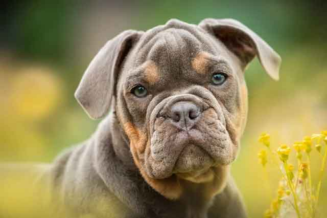
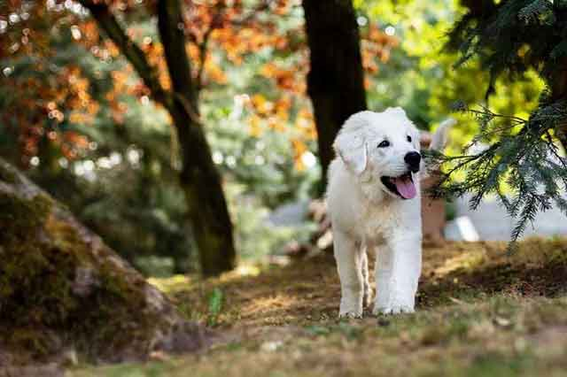
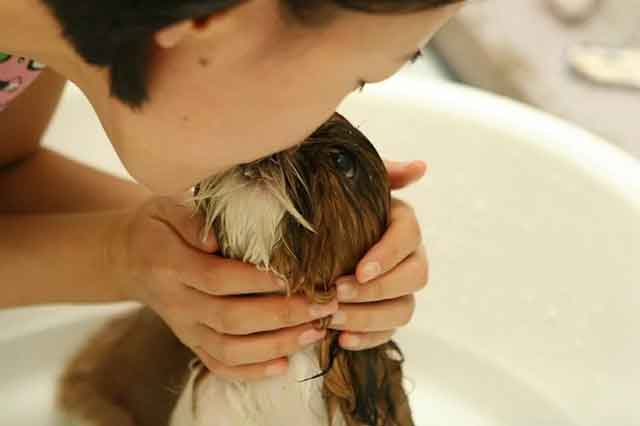
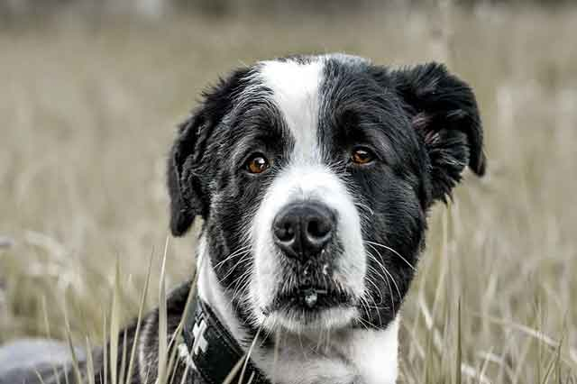

우리 집 강아지 왜 핥는 걸까요?
사랑스러운 강아지, 너무 예쁘고 귀여워 품 안에 가득 안아줄 때가 많죠. 또는 잘못을 저지르고는 호되게 혼내는 일도 적지 않습니다. 또는 갑작스럽게 다가와서는 애처로운 눈빛을 보이며 쳐다보기도 하죠. 말 못 하는 우리 집 강아지. 무엇을 원하는지 참 궁금할 때가 많은데요. 그럴 때마다 함께 핥은 행동을 보이기도 합니다. 이것이 무엇을 의미하는지 도무지 알 수 없을 때가 많습니다. 우리 집 강아지 왜 핥는 걸까요?
1) 호감, 환경 그리고 탐색
강아지가 태어나서 어미 개에게 가장 많이 보이는 행동은 바로 젖을 찾기 위해 여기저기를 어미 개를 핥게 됩니다. 그 과정에서 어린 강아지는 욕구를 해결하기 위한 탐색 그리고 호기심을 충족시키는 결과를 가져오죠. 따라서 이러한 행동의 결과로 강아지가 핥는 행위 중 하나의 의미는 호감이나 환영을 표시합니다.
2) 반가움, 즐거움 그리고 사랑
강아지는 독립성이 강한 고양이와 달리 함께 있는 것을 선호합니다. 그래서 대게 반려인이 없는 조용한 집에 혼자 남게 되면 하울링을 하며 외로움을 호소하거나 축 처진 표정으로 구석 한자리에 멍하니 반려인을 기다리곤 하죠. 그러다가 반려인이 집으로 돌아왔을 때는 반가운 마음으로 쫓아나가 온몸으로 표현을 하거나 얼굴을 핥는 등의 행동으로 반가움을 표시합니다. 그 외에도 복종과 사랑을 의미하기도 합니다. 반려인에게 배를 보이거나 꼬리를 흔드는 등의 긍정적인 신호를 마구 보내면서 핥는 행동을 보인다면 이는 반가움, 즐거움 그리고 사랑을 의미할 것입니다.
3) 청결, 상처 그리고 경고
막 태어난 강아지를 어미 개가 핥아 주는 것을 본 적이 있을 것입니다. 이는 몸에서 묻은 여러 가지 이물을 씻어주기 위함인데요. 이러한 경험을 바탕으로 강아지는 몸이 지저분하거나 혹은 아픈 부위가 생기면 그 부위를 핥거나 깨끗하기 위해 핥는 행동을 보입니다. 또한, 냄새 맡는 능력이 뛰어난 강아지는 사람이 느끼지 못하는 영역까지도 맡을 수 있는데요. 이때 특정 부위를 계속해서 핥거나 이상 행동을 보일 때는 병이 생긴 것은 아닌지 살펴볼 필요가 있습니다.
4) 스트레스, 불안 그리고 위로
스트레스를 받거나 불안한 상황이 생길 때는 자신의 신체를 핥거나 또는 꼬리를 무는 등의 행동을 보이며 불안한 상태를 보이기도 합니다. 원하는 것을 얻지 못한 강아지가 보이는 행동으로 스트레스나 불안을 나타내지만, 그와 다르게 사람의 기분 상태에 따라서 짖거나 주변에 와서 핥는 행동을 보일 때는 주인의 기분에 따라 위로를 해주는 행동으로도 볼 수 있습니다.

핥는 행동 하나만으로 강아지가 무엇을 의미하는지 명확하게 알 수는 없습니다. 하지만, 복합적인 다른 행동과 함께 의미를 찾아낸다면 강아지와의 소통은 그다지 어려운 일이 아닙니다. 강아지가 핥는 이유! 조금만 관심을 기울이고 살펴본다면, 무엇을 원하는지 또 무엇을 주고 싶은지를 이해할 수 있지 않을까요?
[출처] 우리 집 강아지 왜 핥는 걸까요? | 작성자 땡자